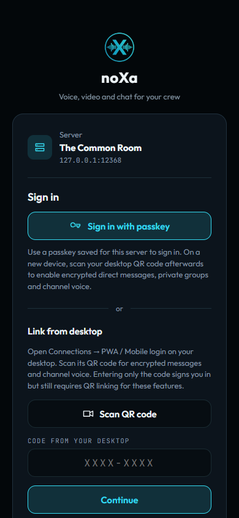
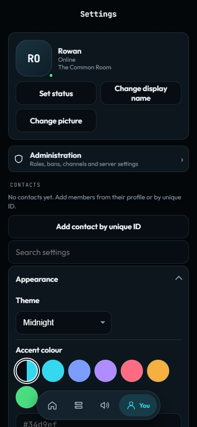
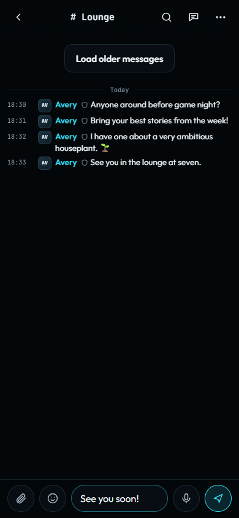

Using noXa · Public alpha
Use noXa in your browser
Open the mobile PWA, link a device or sign in, install it, and manage its local settings.
Open the PWA for the right community
The browser client is a separate progressive web app served at the community’s HTTPS /app/ path. The public noXa site offers Launch PWA client. For another self-hosted community, use its operator’s HTTPS address.
The sign-in screen shows the server name and host. Check both before linking a device or entering credentials. Your device identity and remembered settings belong to this browser’s storage; another browser or a private browsing session can have different local state.
The PWA has its own phone and wide-screen layouts. Its available actions depend on browser support, server configuration, your account, and permissions. Desktop capture and native OS features do not imply identical browser behavior.
Sign in or link from a trusted device
The connection screen offers the sign-in methods supported by the current server. A registered passkey can authorize a new device through the browser’s passkey prompt. Passkeys require a supporting browser and platform. On a new device, passkey sign-in alone does not establish the server trust needed by secure messaging and channel voice; scan the trusted desktop’s QR code afterwards.
- On an existing desktop session, open Connections → PWA / Mobile login. Check that the PWA host shown really belongs to the server you are connected to.
- Scan the desktop’s QR code or open its complete QR link in the PWA. This carries the desktop identity needed to enable encrypted direct messages, private groups, and channel voice.
- Compare the two-digit verification code shown on the two devices and check that the request belongs to the device you intend to add.
- Approve the request on the existing trusted device. Keep the PWA open while it waits for that decision.
- If the code expires or the request is denied, start a new link. Do not approve an unexpected device request.
Entering only the hidden desktop code can sign this browser in, but encrypted direct messages, private groups, and channel voice remain blocked until QR linking establishes the desktop-confirmed server identity. After QR approval, this browser connects with its own registered device identity. When offered, save a passkey under You for a later sign-in. Guest access appears only when the server allows guest login; a server join password may still be required.
Use Devices & passkeys on the desktop or the device list under You in the PWA to review the new device. Where confirmation is required, compare its fingerprint and confirm it before sending it direct messages. Copy recent history can transfer readable direct-message records from a confirmed existing device, with a chosen time range. This copies records rather than old encryption sessions or keys; the privacy guide explains the transfer’s limits.


Install the app and choose notifications
On supported phones, the signed-in PWA offers an installation prompt. Installing changes how you launch the app; it does not create a separate community account.
- iPhone / iPad: in Safari, choose Share → Add to Home Screen. Enable Open as Web App if offered, then Add.
- Android: in Chrome, choose ⋮ → Install and create shortcut → Install. Some versions show Add to Home screen → Install.
- macOS: Safari on macOS 14 or later offers File → Add to Dock. Chrome offers an install icon in the address bar.
- Windows / Linux: use the install icon in Chrome or Edge when available, or continue in a browser tab.
Open the installed app afterwards. If it asks you to sign in again, use a passkey or link it from the desktop.
Open You to find the searchable Settings sections, profile, passkeys, and devices. Notification availability depends on browser support, installation requirements, permission, and the server’s push configuration.
Enable notifications only when wanted, then choose whether to hide details or always notify. If the browser denied permission, change the site’s permission in browser settings before trying again. Use the app’s notification controls for quiet hours, behavior, and sounds when available.


Chat and keep your device recoverable


Open a permitted conversation from the app navigation and use its message composer. The app also includes voice, calls, threads, search, saved items, and community administration screens where the account and browser support them.
Use You to review registered devices and the backup options. An identity backup and a settings export are different: a settings export does not include identity keys or message history. Protect an identity backup and its passphrase as account access material.
Before clearing browser storage, forgetting this device, or changing phones, verify that you have another approved sign-in or a usable identity backup. Local settings and data can be lost when browser storage is cleared.